Model Implementation
1. BERT Transformer Model with “review” as input and “voted_up” as output
The BERT model (Bidirectional Encoder Representations from Transformers) is a pre-trained transformer-based language model designed to understand text context bidirectionally. We leveraged it for text classification by fine-tuning it on our dataset to predict whether a review was positive (voted_up)/
We will first load in our featured_reviews.csv into a dataframe. We take our “review” feature as X or our input and take “voted_up” as y or our output. The data initially looks like this:

BERT model first tokenizes this text data before training. The tokenized transformed data looks like this:
Our processing involves the following steps:
- Used BERT's pre-trained tokenizer (bert-base-uncased) to tokenize the review text
- Each review was:
- Split into tokens
- Converted into unique token IDs (input_ids)
- Padded or truncated to a maximum length of 128 tokens
- Generated an attention_mask to indicate which tokens should be attended to
- Created a ReviewDataset class to manage the tokenized inputs and corresponding labels
- Split the dataset into training and testing sets (X_train, y_train, X_test, y_test)
The model training involved the following:
- Architecture:
- Fine-tuned the bert-base-uncased model for binary classification
- Added a classification head on top of BERT to predict the voted_up label (output layer with sigmoid activation for probabilities)
- Training Configuration:
- Optimized with AdamW (specific for transformers)
- Loss function: Binary Cross-Entropy Loss
- Metrics: Accuracy, F1-Score
- Batch size: Adjusted to fit the GPU memory
- Learning rate: Fine-tuned with a warm-up scheduler for stable convergence
After training the BERT model, we evaluated it on the test set. Below are the results:
- Accuracy: 93.44%
- F1 Score: 96.36% (for class 1 positive reviews)
- Classification Report:
- Class 0 (Negative reviews):
- Precision: 65%
- Recall: 69%
- F1 Score: 67%
- Class 1 (Positive reviews):
- Precision: 97%
- Recall: 96%
- F1 Score: 96%
- Weighted Average: Precision = 94%, Recall = 93%, F1-Score = 94%
- Class 0 (Negative reviews):
The model performs exceptionally well for positive reviews (class 1), which dominate the dataset. Performance for negative reviews (class 0) is weaker, with lower precision and recall. The overall weighted metrics indicate a robust model for predicting review positivity
To try to improve our model we will incorporate more features into the next model
Data Preprocessing
Reviews from each game were stored in JSON Files. First, we compiled all JSON files into one single pandas dataframe for data preprocessing. Any duplicate or non english records were removed. A field called “author” was a dictionary, which was flattened by appending each of its keys as a separate column in the dataframe. Records without “playtime_at_review” fields were dropped. For our analysis we would only need the columns: "game_name", "review", "voted_up", "timestamp_created", "author_num_games_owned", "author_num_reviews", "author_playtime_at_review", "author_playtime_last_two_weeks" and "author_playtime_forever". Only these relevant columns were kept with others getting discarded. The "review" column was cleaned with all text being converted to lowercase for uniformity, punctuation and non alphanumeric characters were removed using regular expressions. We also filter out reviews with lack of meaningful content. We do this by first checking if the review has "valid words". "Valid words" are defined to be meaningful english words. But some terms which are commonly used in gaming scenarios like "gg", "goty", "despawn", etc. are also added to our set of valid words. However, we cannot manually add all words relevant to the games and there could still be words which are specific to some games and their communities like the word "elden" used in the game Elden Ring. So, we add another check in our validation such that if a word, which isn't already marked valid by our inital check, appears more than 3 times across other reviews is marked as a valid words. With these checks, the reviews are marked as relevant only if atleast 50% of the words are found to be valid. All records with empty or irrelevant reviews after the transformations were dropped with the dataset now having close to 43000 records. The cleaned dataset is stored in a csv which looks like this:

For a detailed walkthrough of our data collection and preprocessing step, you can view our full Jupyter notebook here.
Inital Data Exploration and Visualizations
First we look at some inital data exploration. We load our cleaned reviews dataset into a pandas dataframe df. The columns along with their data types look like this:
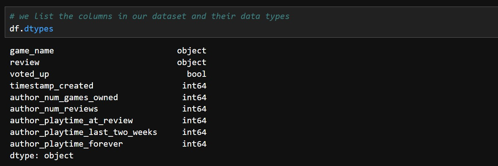We have 9 columns, with game_name and the review being objects (string), the voted_up which indicates if the review was positive or negative being boolean, and all our columns with information about the author of the review being numerical. We can then get a summary of all numerical columns of our dataset:

Some common statistics like the mean, standard deviation and other percentile values for all our numerical columns are displayed. We can then see how many positive and negative reviews we have in total in our dataset.
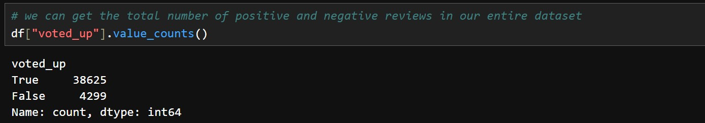There around 38600 positive reviews and 4300 negative reviews. Now lets look at some specific columns which are of importance to us. Lets check the average review length.
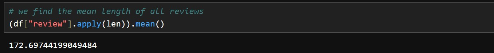We can see that people use around 172 characters on average in their reviews. We'll look at the average playtime across all the games in hours played next.
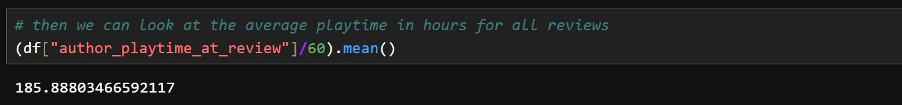The average playtime of the reviewed games is around 185 hours. This seems very high. Does the average gamer really spend this much time on a game? Since our review data includes some multiplayer games where players tend to invest much more time, the data can get skewed. Let us look at median playtime of the reviewed games in hours played.
The median comes out to be around 35 hours. This is more representative of how much time gamers usually spend on a game. Lets check if there's any correlation between playing time and review length.

No significant correlation can be found between the review length and time spent playing that game. So its not like people who play games for longer write longer reviews.
Now its time for us to look at some visualizations to a get a better look at our data.
Median Playtime (in hours) by Game
First let us look at what the median playtime for each game looks like.
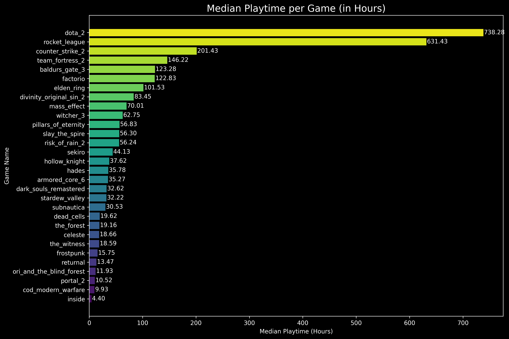As one would expect, multiplayer PVP games like DOTA 2, Rocket League and Counter Strike 2 have the highest playtimes, where as single player and CO-OP titles like INSIDE, and Portal 2 have shorter playtimes. Call of Duty Modern Warfare has both multiplayer and singleplayer options but still has low playtimes, which might indicate that people tend to drop the game after playing the singleplayer campaign and don't indulge too much into multiplayer.
Average Review Length by Game
Let us see how long the average review is for each game.
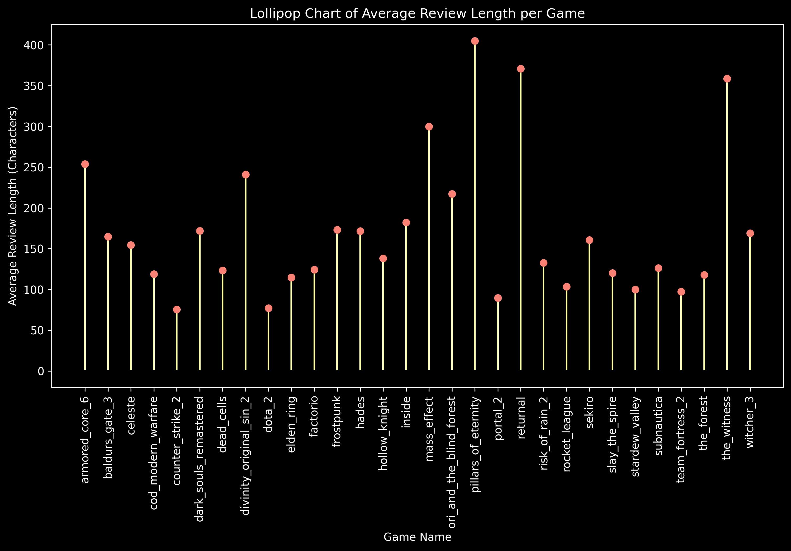Pillars of Eternity, Returnal and The Witness seem to have the longest reviews while Counter Strike 2 and DOTA 2 have the shortest. Multiplayers games tend to have shorter reviews compared to the others.
Review Sentiment Distribution by Game
We explore the distribution of positive and negative reviews for each game.
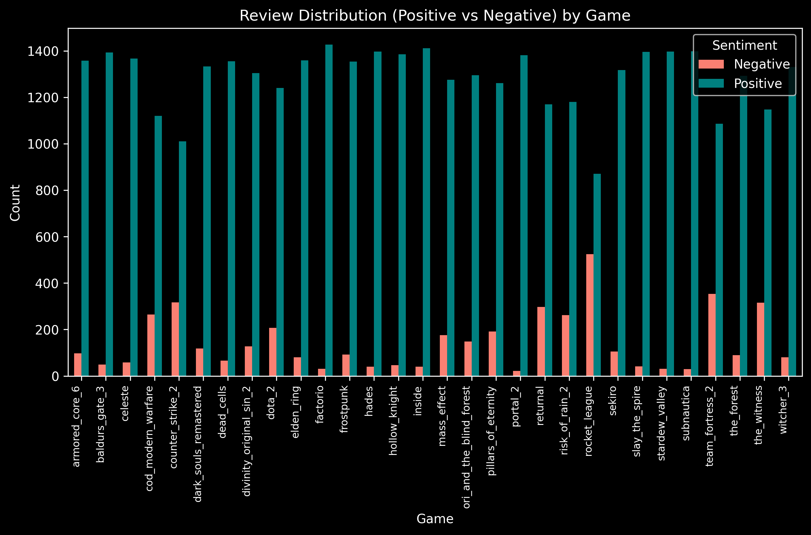It seems that multiplayer games like Rocket League, Team Fortress 2 and Counter Strike 2 have a higher ratio of negative reviews than other single player and CO-OP games.
Percentage of Positive Reviews by Game
If we want to explore review sentiment of the games further we can see the sorted percentages of positive reviews for the games.
Portal 2, Subnautica and Factorio have the highest percentage of positive reviews wherease Rocket League, Team Fortress 2 and Counter Strike 2 have the least.
Review Length vs Playtime
We can visualize the distribution of the length of the reviews and the playtime while writing the review.
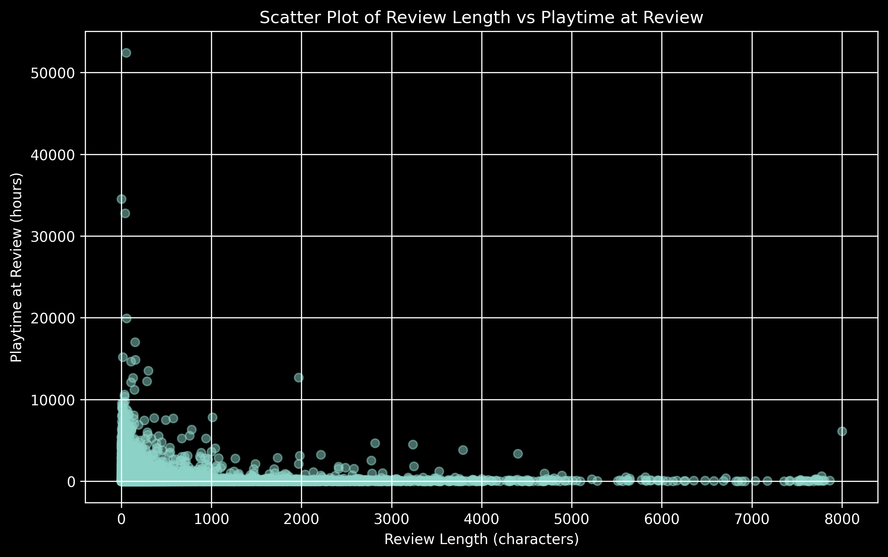Its hard to identify any specific relationship between the two. But we can also see that both the reviews length and playtime tend to be on the shorter side. We have too many data points and its hard to see the proper distribution. So we'll take a sample of 1000 reviews and then plot them next.
Review Length vs Playtime (Sampled and Zoomed)
We take a sample of 1000 random reviews from our set to get a clearer visual. We also limit our playtime from 0 to 2000 hours and review length from o to 1000 characters as thats where most data points lie.
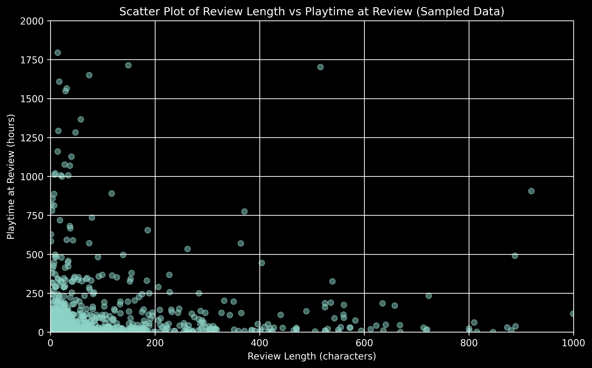We can see most playtimes are under 250 hours and most reviews are also under 200 characters. People tend to write short reviews for most games they play.
Distribution of When Reviews are Posted
The ratio of playtime at review to the total playtime can give us an idea about when people tend to post their reviews. A small ratio means the reviews were posted very early on when they started playing the game and bigger ratios would mean the reviews were posted closer to the end of their gameplay.
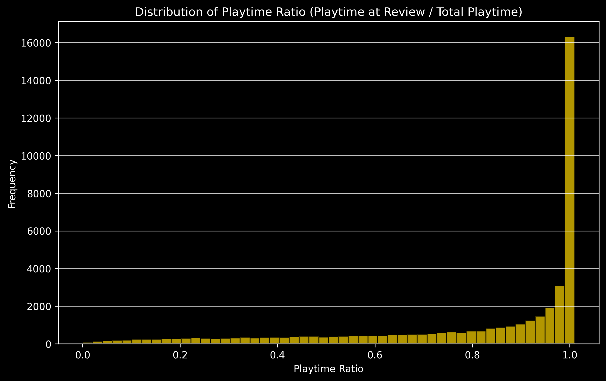We can see most highest ratios are more common. So most gamers tend to put their reviews closer to the end of their gameplay. This means they are more likely to post the reviews when they have completed the game or they dont play it anymore. Very few people tend to post reviews of games as they're playing them.
Word Cloud of Most frequent Words
Let us visualize what kind of words are most frequently used in our reviews.
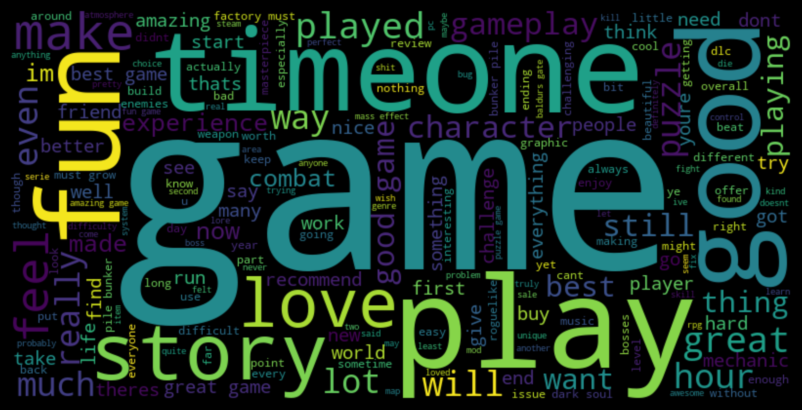Words like "game", "play", "one", "time", "good", "fun", etc. are very commonly used across our reviews. But we have predominantly positive reviews so words used in those will overshadow words used in negative ones. Let us see if the kind of words used changes across positive and negative reviews
Word Cloud of Most frequent Words across Positive Reviews
First, let us visualize what kind of words are most frequently used in positive reviews.
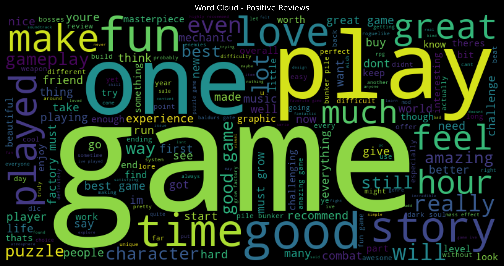Words like "game", "play", "time", "good", "one", "fun" are very common. These are the same ones which appeared in our overall word cloud. Some more words like "great" and "love" also start appearing more frequently.
Word Cloud of Most frequent Words across Negative Reviews
Next, let us visualize what kind of words are most frequently used in negative reviews.
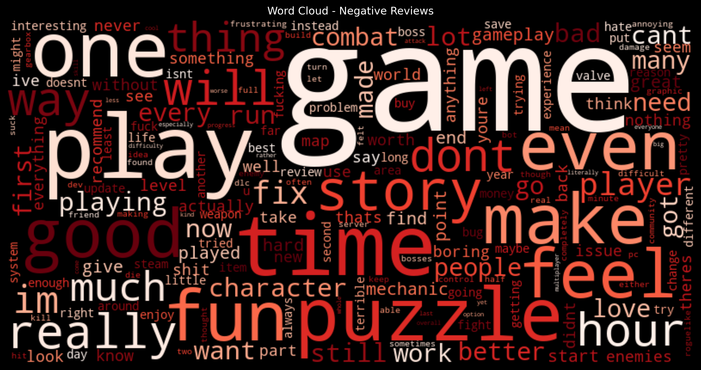In negative reviews, words like "game", "play", "time", "one" are still the most common. Words like "great" and "love" become much less frequent.
Review Length Distribution by Review Sentiment
The review length for each type of sentiment is analyzed next.
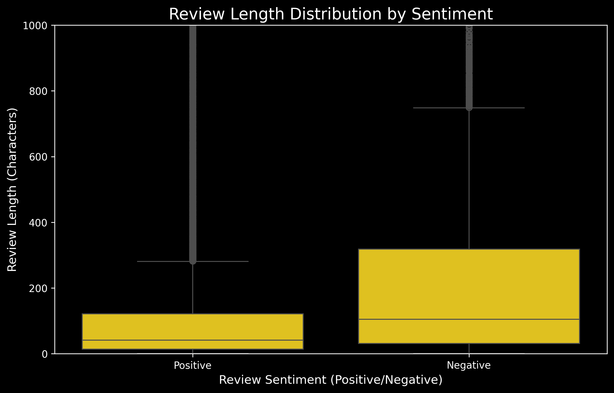We limit our review length to upto 1000 characters as we have lot of outliers. Positive Reviews tend to have much lesser median number of charcaters. Negative reviews tend to be longer with a wider interquartile range.
Playtime distribution by Review Sentiment
We now explore the distribution of playtime of two sentiments of reviews.
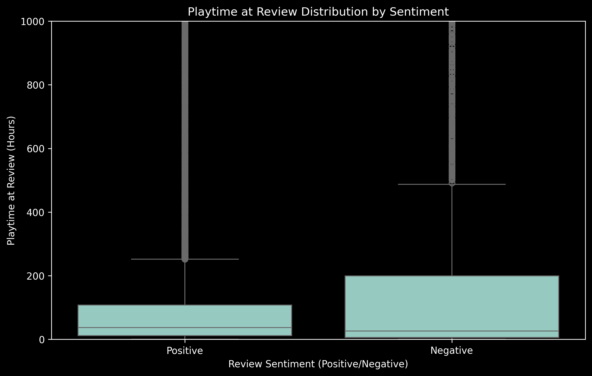Both types of reviews have a lot of outliers so we limit our playtime to upto 1000. Positive Reviews tend to have a higher median playtime compared to negative reviews. However negative reviews have a much wider interquartile range of playtimes.
Frequency of Positive and Negative Reviews with Playtime
Finally, let us see the frequency of negative and positive reviews for different ranges of playtime.
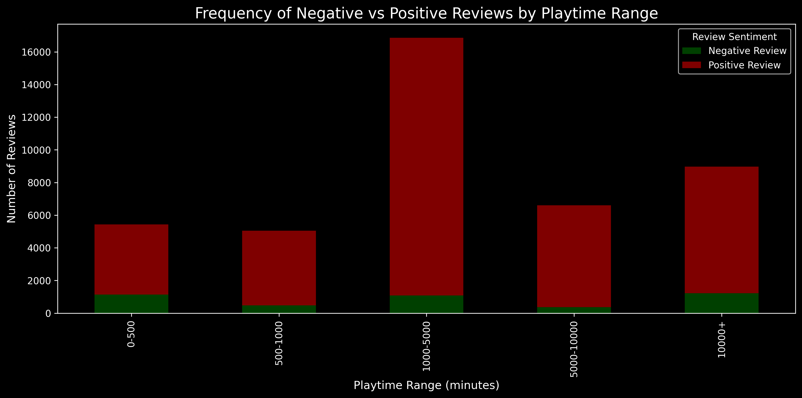Shorter playtimes have a higher ratio of negative to positive reviews compared to longer reviews. As evident from the median, people tend to play for shorter times when they leave a negative review. The playtimes between 1000 to 5000 minutes has the most number of reviews.
For a detailed walkthrough of our data exploration process and visualizations, you can view our full Jupyter notebook here.